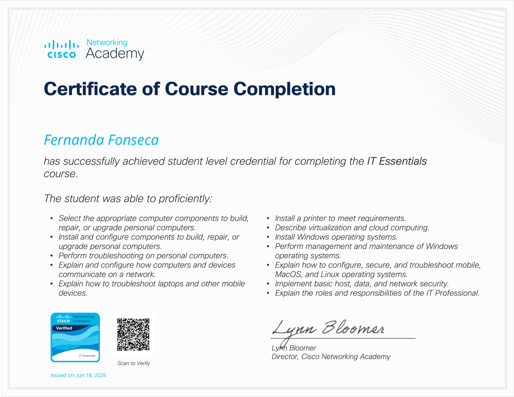
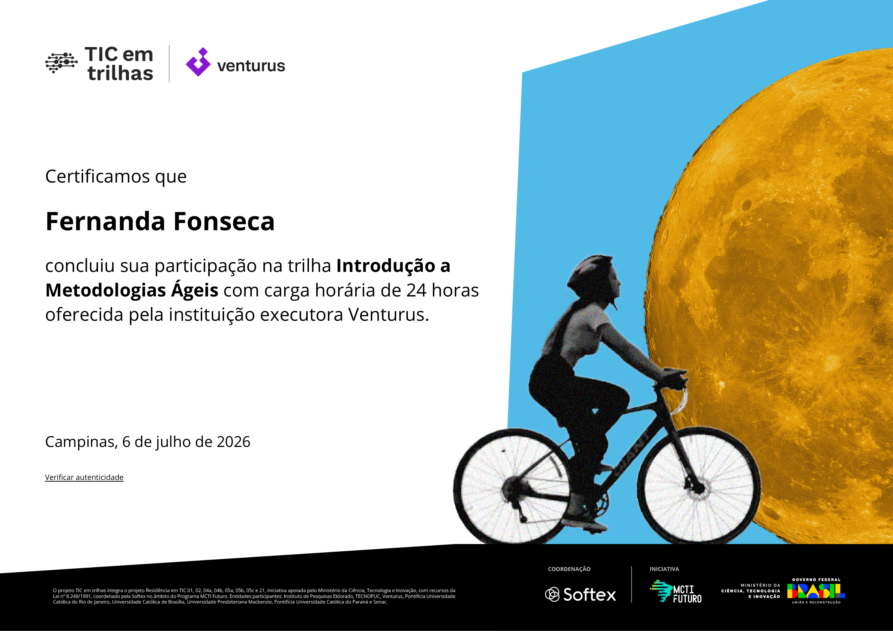

Aprender
Busco ampliar meus conhecimentos por meio da faculdade, cursos, certificações e projetos práticos.
Olá, eu sou a
Construo soluções digitais com foco em desenvolvimento web, aprendizado contínuo e evolução profissional.
Sobre mim
Minha formação em Desenvolvimento de Software Multiplataforma combina desenvolvimento, tecnologia, trabalho em equipe e aprendizado contínuo.
Busco ampliar meus conhecimentos por meio da faculdade, cursos, certificações e projetos práticos.
Transformo conhecimentos em projetos que podem ser apresentados, documentados e evoluídos ao longo da formação.
O portfólio acompanha minha trajetória e recebe novos projetos, competências e experiências a cada etapa do curso.
Projetos
Projetos acadêmicos, profissionais e pessoais organizados para acompanhar minha evolução durante o curso.
Projetos desenvolvidos durante a formação na FATEC.
Plataforma web desenvolvida em grupo, com a missão de facilitar o aprendizado de metodologias ágeis. O portal oferece atividades interativas para testar e validar seu conhecimento.
Participação no Design de telas, desenvolvimento, correção de bugs e documentação.
Site institucional desenvolvido para apresentar o curso de Desenvolvimento de Software Multiplataforma.
Desenvolvimento de páginas, organização visual e implementação das funcionalidades atribuídas ao projeto.
Espaço reservado para os próximos projetos integradores e atividades desenvolvidas durante o curso.
Experiências profissionais que poderão ser incorporadas ao longo da trajetória.
Esta área está preparada para receber projetos, experiências e contribuições profissionais futuras.
Espaço para experimentos, estudos e projetos desenvolvidos por iniciativa própria.
Aplicação simples e funcional para gerenciamento de usuários, desenvolvido em Node.js e JavaScript, o projeto permite cadastrar novos usuários de forma intuitiva, armazenando suas informações em um banco de dados.
Desenvolve competências técnicas em programação, bancos de dados e APIs RESTful.
Aplicação desenvolvida em JavaScript para consulta de endereços brasileiros de forma automatizada, utilizando a API do ViaCEP.
Desenvolve habilidades em consumo de APIs externas (assincronismo/HTTP), tratamento de dados JSON e manipulação dinâmica de formulários na interface.
Esta é uma aplicação web Full-Stack desenvolvida com a arquitetura padrão em Node.js, voltada para o cadastro, armazenamento e listagem de palpites do usuário em jogos da Mega-Sena.
Desenvolvimento de algoritmos de validação, manipulação de arrays/coleções, regras condicionais de negócio e controle de entradas do usuário.
O projeto consiste em uma aplicação web desenvolvida em Node.js com o framework Express para consultar os resultados dos concursos da Mega-Sena. A aplicação funciona consumindo uma base de dados local alimentada por dados oficiais da CAIXA Econômica Federal.
Consumo de APIs externas de resultados, lógica de comparação e checagem de acertos, manipulação e filtragem de coleções/arrays, e atualização dinâmica de componentes na interface.
Conhecimentos
Tecnologias estudadas e utilizadas ao longo da formação e dos projetos.
Informações complementares
Certificações, conhecimentos, interesses que complementam minha trajetória e formação.
Certificações e cursos concluídos ao longo da formação.


Desenvolvimento web, versionamento de código, bancos de dados, metodologias ágeis, prototipação e fundamentos de desenvolvimento de software.
Tecnologia, desenvolvimento web, aprendizado contínuo, design de interfaces e projetos criativos.
Contato profissional
Para acompanhar meus projetos e trajetória profissional, acesse minhas redes profissionais.